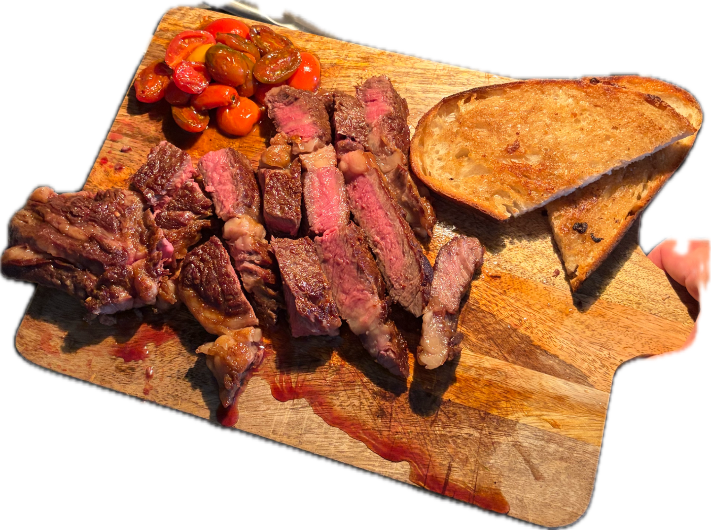
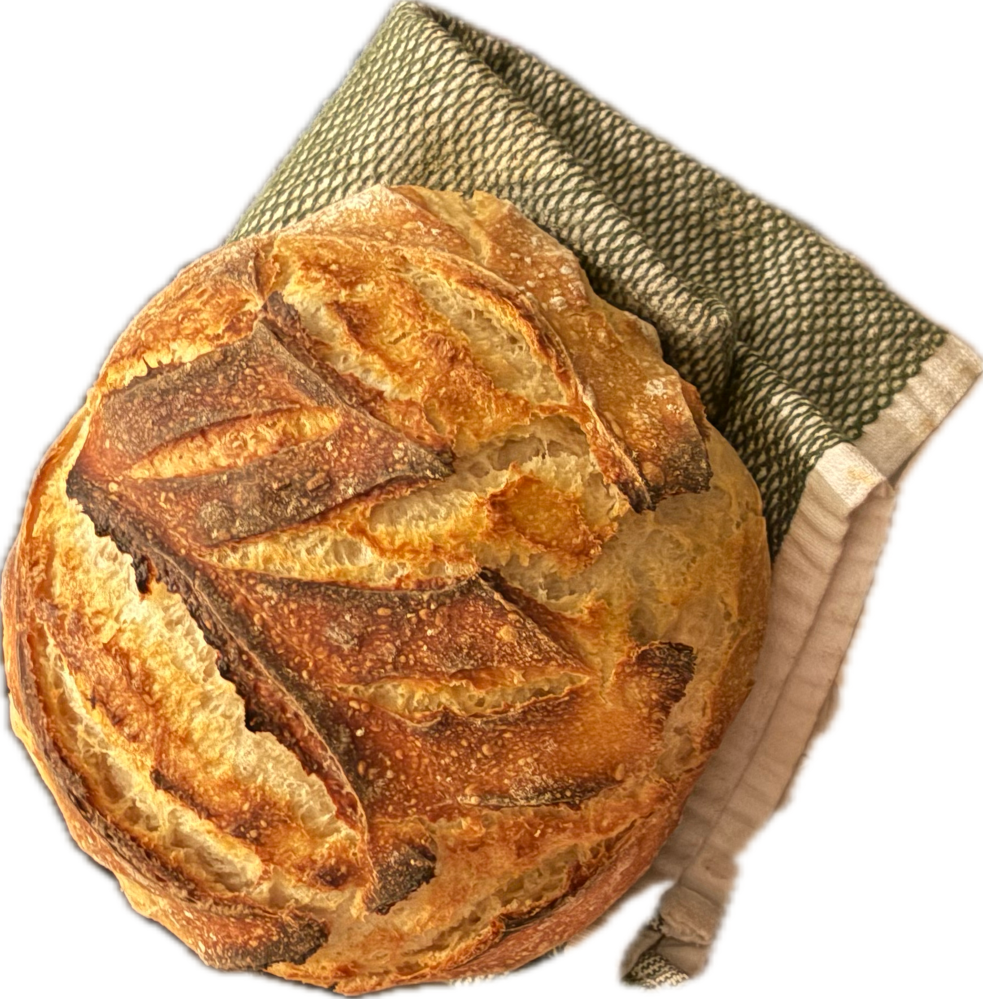
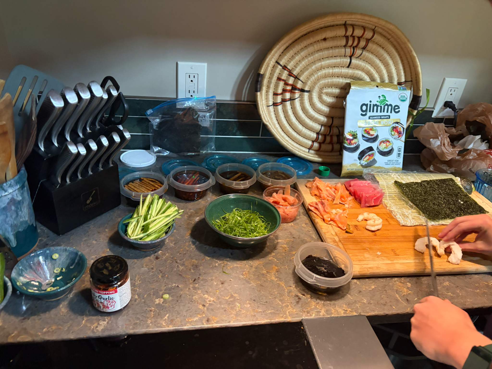
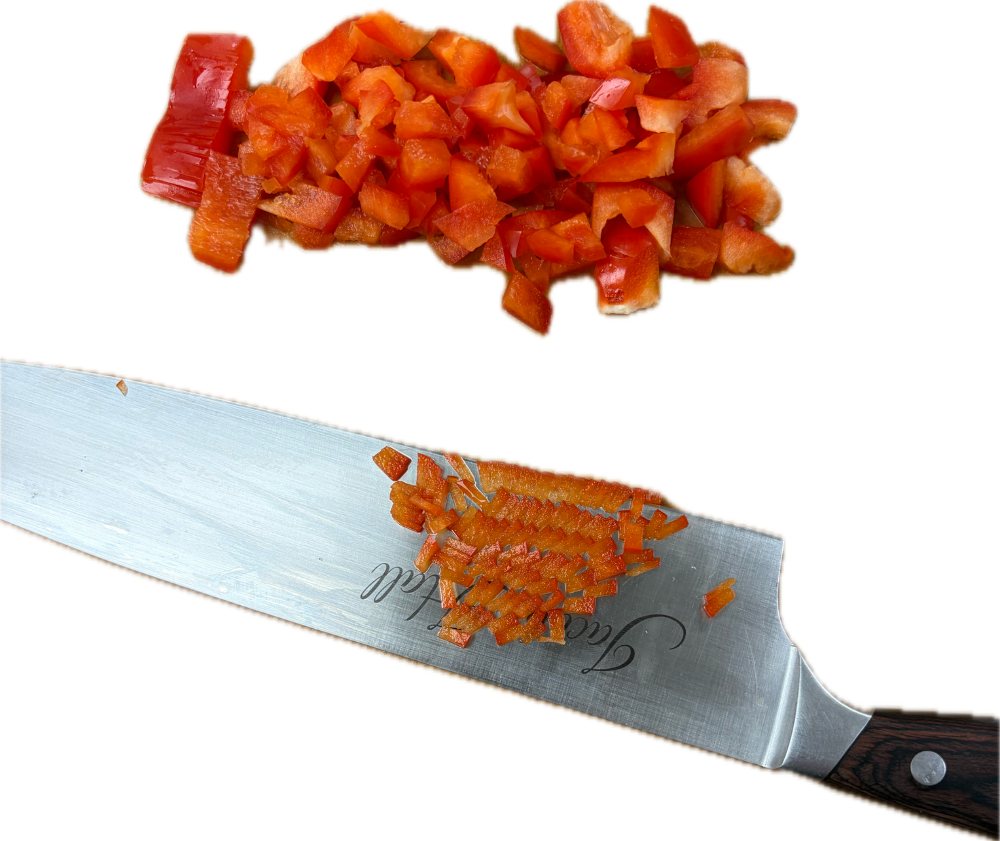
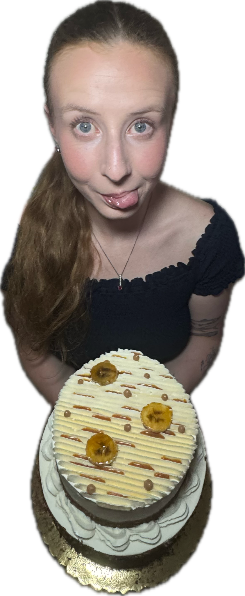

01 / FOODSteak nightboard / bread / tomatoes
ROHBEIR
AN ARCHIVE OF MAKINGEST. 2026
SCROLL TO UNFOLD ↓
AN ARCHIVE OF MAKING / EATING / LIVING
WELCOME TO
orange
objects
A visual diary of food, jewelry, handmade things, and whatever comes next.
ENTERTHE ARCHIVE↓

PLATE 001
DINNER
DINNER
✳
MADE BY HAND / SOMETHING TO EAT / SOMETHING TO WEAR / SOMETHING TO KEEP / MADE BY HAND / SOMETHING TO EAT / SOMETHING TO WEAR / SOMETHING TO KEEP /
01
SELECTED WORK
Things I've
been making.
The stock photos are gone. These are yours now — imperfect, immediate, and much more interesting.

02 / BREADLoaf studycrust + crumb
good things
take a little
mess.

03 / PROCESSBefore the rollprep table / hands / mise en place

04 / PROCESSKnife workred pepper / repetition
ORANGE
color / heat / appetite / energy / the good part
02
ABOUT THE MAKER

SELF PORTRAIT / CAKE 001I make things I
want to live with.
This is a placeholder bio. Soon this can be your actual story — the food you make, the jewelry you design, the objects you collect, and the little obsessions that tie everything together.
The site is intentionally built like an evolving notebook rather than a finished catalog. Add a piece, move something around, change the caption, keep going.
MORE ABOUT ME ↗03CONTACT